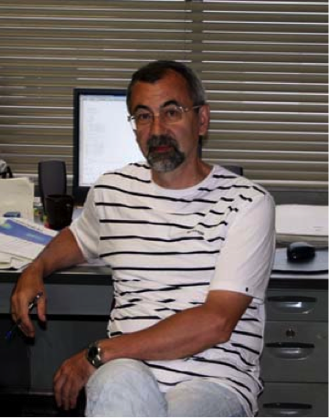

Сурков
Вадим Вадимович
Профессор,
доктор физико-математических наук
НИЯУ «МИФИ»,
115409, г. Москва, Каширское шоссе, д. 31
+7 495 323–90–38
surkov@redline.ru
-
Физика ионосферы и магнитосферы.
-
Ультра и крайне низкочастотные (УНЧ и КНЧ, менее 30 Гц) электромагнитные поля.
-
Электромагнитные эффекты при разрушении и деформации вещества.
- Аспирантура по кафедре «Экспериментальные методы ядерной физики», МИФИ (1977—1980).
- Диплом с отличием инженера-физика по специальности «Теоретическая ядерная физика», МИФИ (1976).
- Доктор физико-математических наук, специальность: геофизика, Институт Динамики геосфер. РАН, (1993). Тема диссертации: «Электромагнитные эффекты при ударноволновом воздействии на неоднородные среды».
- Кандидат физико-математических наук, специальность: теоретическая и математическая физика, МИФИ (1980). Тема диссертации: «Теоретические вопросы динамического нагружения микронеоднородных конденсированных сред».
-
Все вопросы, относящиеся к физике УНЧ и КНЧ электромагнитных полей в космосе, атмосфере и на Земле.
-
Ионосферный альфвеновский резонатор (ИАР), шумановские резонансы.
-
Спрайты, голубые джеты, эльфы, тролли и другие явления, сопутствующие гигантским мезосферным (высота 50-85 км) электрическим разрядам.
-
УНЧ и КНЧ электромагнитные эффекты, вызванные изменениями космической погоды, землетрясениями, извержениями вулканов, цунами и другими природными катастрофами.
Соавтор 87 научных работ, включая 82 статьи, 2 монографии и 3 изобретения.
Название первой монографии «Электромагнитные эффекты при землетрясениях и взрывах», Москва, 2000 г., 448 с. Доступны аннотация, оглавление и полный текст книги.
Название второй монографии «Ultra and Extremely Low Frequency Electromagnetic Fields», Springer Geophysics Series, XVI, Springer, 2014, 486 pp. Посмотреть аннотацию и заказать эту книгу можно на сайтах http://www.springer.com/978-4-431-54366-4 и http://link.springer.com/978-4-431-54367-1.
Профессор Сурков читает лекции, ведёт семинарские и лабораторные занятия по курсу общей физики, который включает: механику и специальную теорию относительности, молекулярную физику и термодинамику, электричество и магнетизм, волны и оптику, а также начала атомной и ядерной физики. Пяти-семестровый курс лекций рассчитан на студентов факультета «Теоретической и экспериментальной физики» НИЯУ МИФИ. В.В. Сурков возглавляет методическую комиссию лабораторий "Атомной физики" и "Спектроскопии", руководит научно-методическим семинаром кафедры.
- Факультет теоретической и экспериментальной физики, МИФИ (студент, 1970—1976)
- Кафедра «Экспериментальные методы ядерной физики», МИФИ (инженер-физик, 1976—1977)
- Очная аспирантура МИФИ (1977—1980)
- Кафедра общей физики, МИФИ (ассистент, 1980-1984; доцент, 1983—1993; профессор, с 1994 по настоящее время)
- Институт Динамики геосфер РАН (ведущий научный сотрудник, 1993—2000)
- Институт физики Земли РАН (ведущий научный сотрудник, 2000—2008)
С более подробной информацией можно ознакомиться в разделе биографический очерк.